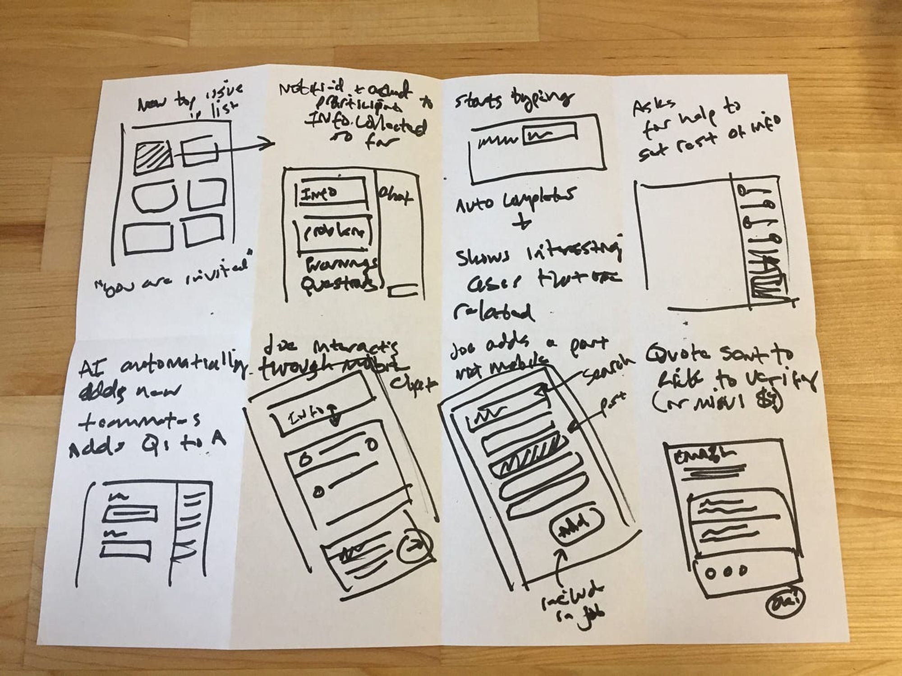

What is Crazy 8's? A fast sketching exercise: fold a sheet into eight panels and sketch eight different ideas in eight minutes, to push past the obvious first idea.
- Push beyond your first idea and explore multiple directions.
- Capture quick, visual fragments of possible solutions.
- Generate a variety of ideas without worrying about polish or correctness.
On this page
Context
We’ve completed the understanding phase of the sprint, and now it’s time to diverge into potential solutions. Crazy 8’s helps us rapidly generate a wide range of ideas before narrowing down.
Goal / Learning Outcome
- Push beyond your first idea and explore multiple directions.
- Capture quick, visual fragments of possible solutions.
- Generate a variety of ideas without worrying about polish or correctness.
Main Exercise
Crazy 8’s: Each participant folds a sheet of paper into eight sections and sketches eight different ideas in eight minutes.
- 1 idea per minute.
- Sketches can be full screens or partial elements (e.g., landing page, gallery, product feature).
- The aim is quantity over quality—speed and variety matter more than logic or neatness.
Extra Notes
- You don’t need to “get it right”—this is about exploration.
- Weird, fragmented, or imperfect ideas are welcome.
- The hardest ideas often come later, but they can be the most innovative.
📚 Resources
- Example: Crazy 8’s Method
- Timer or stopwatch
- Blank A4 paper + pens/markers
Template

- Fold one sheet of paper into 8 rectangles.
- Use each rectangle for 1 sketch.
Tips
- Don’t overthink—go with your first instinct.
- Aim for variety (even small variations count).
- Keep sketches simple: boxes, arrows, stick figures.
Checklist
- [ ] Paper folded into 8 sections
- [ ] Timer set for 8 minutes
- [ ] Each participant sketches 8 ideas
- [ ] Share and discuss ideas
- [ ] Select preferred directions to move forward
Summary
Crazy 8’s is a fast sketching exercise where each team member generates 8 ideas in 8 minutes. It’s not about neatness or correctness—it’s about breaking through obvious ideas, exploring alternatives, and capturing fragments of possible solutions. After sketching, participants share, discuss, and select the most promising concepts to take forward into solution development.